← Back to home
Simulated Annealing and TSP
This project uses simulated annealing to efficiently solve the Travelling Salesman Problem. The original paper was written for my Graph Theory class and can be viewedhere.This version is altered to better fit the web.
Using Simulated Annealing to Solve the Traveling Salesman Problem
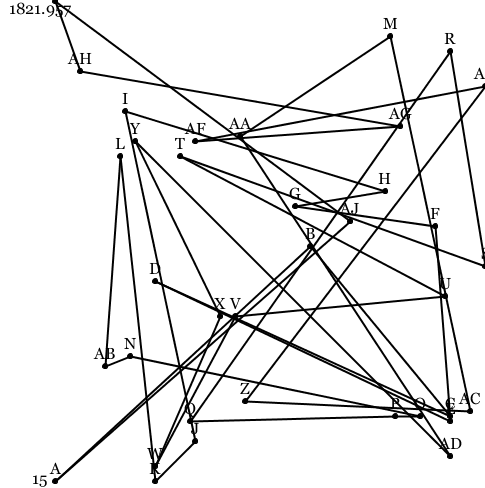
Introduction
The Traveling Salesman Problem is one of the most intensively studied problems in computational mathematics. It consists of a salesperson who must visit N cities and return to his starting city using the shortest path possible and without revisiting any cities. In the language of Graph Theory, the Traveling Salesman Problem is an undirected weighted graph and the goal of the problem is to find the Hamiltonian cycle with the lowest total weight along its edges. A solution of runtime complexity $latex \mathcal{O}(2^nn^2) &bg=FFFFFF$ can be achieved with dynamic programming, but an approximation can be found faster using the probabilistic technique known as simulated annealing.
The Traveling Salesman Problem
The Traveling Salesman Problem is considered by computer scientists to belong to the NP-Hard complexity class, meaning that if there were a way to reduce the problem into smaller components, those components would be at least as hard as the original problem. For this reason, and its practical applications, the Traveling Salesman Problem has been widely studied among mathematicians and computer scientists. It is a classic problem in optimization-focused computer science defined in the 1800s by Irish mathematician W. R. Hamilton and British mathematician Thomas Kirkman[1]. Hamilton had previously invented his ’Icosian Game,’ which is the specific case of the Traveling Salesman Problem in which a Hamiltonian cycle is found on the graph of an icosahedron.
In the 1930s the problem was given its general form in Vienna and Harvard, where Karl Menger studied the problem under the name ’messenger problem.’ They first considered the most obvious solution: the brute force solution. The brute force solution consists of calculating the lengths of every possible route and accepting the shortest route as the solution. The brute force is an unacceptable solution for any graph with more than a few vertices due to the factorial growth of the number of routes. The best achievable rate of growth for the brute force solution is
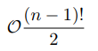
which can be had by setting the first city as constant and using symmetry. Setting the first city as constant has no effect on the outcome as Hamiltonian cycles have no start or end, and symmetry can be exploited because the total weight of a Hamiltonian cycle is the same clockwise and counter clockwise. The former improvement is responsible for the subtraction of 1 and the later is responsible for the division by 2. They also considered the nearest-neighbor heuristic, which if correct would solve the problem in
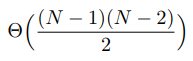
Note: Θ(n) means the problem is solved in exactly n computations, whereas O(n) gives only an upper bound. The nearest-neighbor heuristic is used as follows:
- Choose any vertex as the starting vertex.
- Consider the distance from the current vertex to all of its neighbors that
have not already been visited.
- Choose the neighbor with the shortest distance as the next vertex and
repeat.
- If there are still unvisited vertices in the graph, repeat steps 2 and 3.
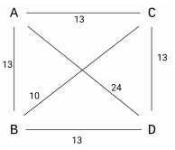
Figure 1: Nearest-Neighbor Heuristic
It is simple to prove that the nearest-neighbor heuristic is not correct. Consider the graph in Figure 1. If we use vertex A as our starting vertex, we find the cycle A,B,C,D,A with total length 60 units. However, the route A,B,D,C,A has total length 52 units. A,B,C,D,A cannot be the shortest Hamiltonian cycle because it is longer than A,B,D,C,A, and the nearest-neighbor heuristic is therefore not correct [2].
The fastest known solution to the Traveling Salesman Problem comes from dynamic programming and is known as the Held-Karp algorithm. It was proposed in 1962 by Michael Held and Richard M. Karp, and Karp would go on to win the Turing prize. Although this algorithm is beyond the scope of this paper, it is important to know that it runs in $latex \mathcal{O}(2^nn^2) &bg=FFFFFF$ time [3].
Simulated Annealing
Although we cannot guarantee a solution to the Traveling Salesman Problem any faster than $latex \mathcal{O}(2^nn^2) &bg=FFFFFF$ time, we often times do not need to find the absolute best solution, we only need a solution that is ’good enough.’ For this we can use the probabilistic technique known as simulated annealing. The inspiration for simulated annealing comes from metallurgy, where cooling metal according to certain cooling schedules increases the size of crystals and reduces defects, making the metal easier to work with. As a probabilistic technique, the simulated annealing algorithm explores the solution space and slowly reduces the probability of accepting a worse solution as it runs. The algorithm, invented by M.N. Rosenbluth and published by N. Metropolis et. al. in 1953 [4], is applied to the Traveling Salesman Problem as follows:
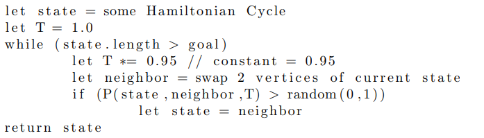
The algorithm stores 2 variables as it goes, state, which is the current Hamiltonian Cycle, and T, which is the temperature. Temperature is named as such due to parallelism to the metallurgical technique. The higher the temperature, the higher the chance of a worse solution being accepted. Temperature starts at 1.0 and is multiplied some constant between 0.0 and 1.0 every iteration, depending on how slowly you want the simulation to ’cool.’ The constant is usually between 0.90 and 0.999. A constant of 0.90 will cool much quicker than a constant of 0.999 but will be more likely to become stuck in a local minimum. Additionally, a larger search space often warrants a constant closer to 1.0 to avoid becoming too cool before much of the search space has been explored.
The probability of accepting a worse solution is defined according to the function P:
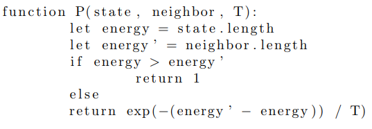
The probability function P is equivalent mathematically to
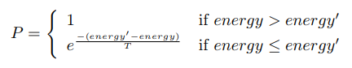
Improvements to the Algorithm
There are a few practical improvements that we can add to the algorithm. The first of which is specific to Euclidean space, which most real-world applications take place in. Consider again the graph in Figure 1. The route A,B,C,D,A was found to be longer than the route A,B,D,C,A. In the former route, the Edges A,D and B,C overlap, whereas the later route forms a polygon. We can extend this to the general case and say that when solving the Traveling Salesman Problem in Euclidean space, the route from a vertex A to a vertex B should never be farther than the route from A to an intermediate vertex C to B.
 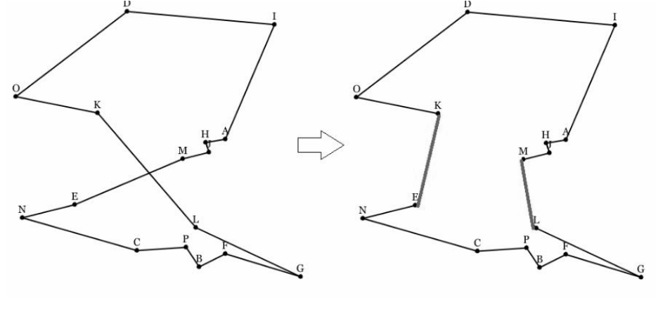
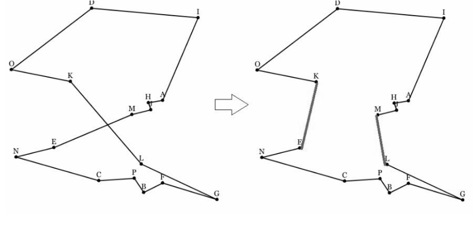
Improvements can also be made in how neighboring states are found and how route distances are calculated. Previously we have only considered finding a neighboring state by swapping 2 vertices in our current route. In some cases, swapping variable numbers of vertices is actually better. This technique, known as v-opt rather than 2-opt is regarded as more powerful than 2-opt when used correctly[5]. How and when to use v-opt is complicated, and may have some overlap with my ISP in preference generation models, where 2-opt is equivalent to Kendall-Tau distance. This is beyond the scope of this paper.
The last two improvements are the easiest to implement. While simulated annealing is designed to avoid local minima as it searches for the global minimum, it does sometimes get stuck. If the simulation is stuck in an unacceptable 4 state for a sufficiently long amount of time, it is advisable to revert to the previous best state. This can be done by storing the best tour and the temperature it was found at and updating both of these every time a new best tour is found.
The simplest improvement does not improve runtime complexity, but makes each computation faster. When computing the distance of a new tour, all but two vertices are in the same order as in the previous tour. Instead of computing all the distances again, only 4 distances need to be computed. To swap vertices C and D in the cycle shown in the graph in Figure 3, the only four distances needed are AC, AD, BC, and BD.
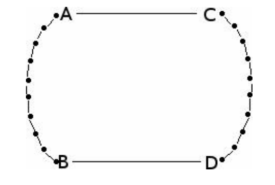
Figure 3: Swapping vertices C and D
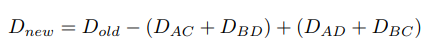
Conclusion
In conclusion, simulated annealing can be used find solutions to Traveling Salesman Problems and many other NP-hard problems. It does not always find the best solution for the Traveling Salesman Problem as fast as the dynamic programming approach, but always returns a route that is at least close to the solution. It can be bettered by using techniques such as the triangle-inequality heuristic, v-opt, best-state restarts, and intelligent edge-weight calculations.
References
[1] Traveling salesman problem, Dec 2016.
[2] Karolis Juodel (https://cs.stackexchange.com/users/5167/karolis
juodel When does the nearest neighbor heuristic fail for the
traveling salesperson? Computer Science Stack Exchange.
URL:https://cs.stackexchange.com/q/13744 (version: 2013-08-30).
[3] Michael Held and Richard M. Karp. A dynamic programming approach
to sequencing problems. Journal of the Society for Industrial and Applied
Mathematics, 10(1):196210, 1962.
[4] Christian P. Robert. The metropolis-hastings algorithm, Jan 2016.
[5] David S. Johnson. Local optimization and the traveling salesman problem.
In Proceedings of the 17th International Colloquium on Automata,
Languages and Programming, ICALP ’90, pages 446–461, London, UK, UK,
1990. Springer-Verlag.